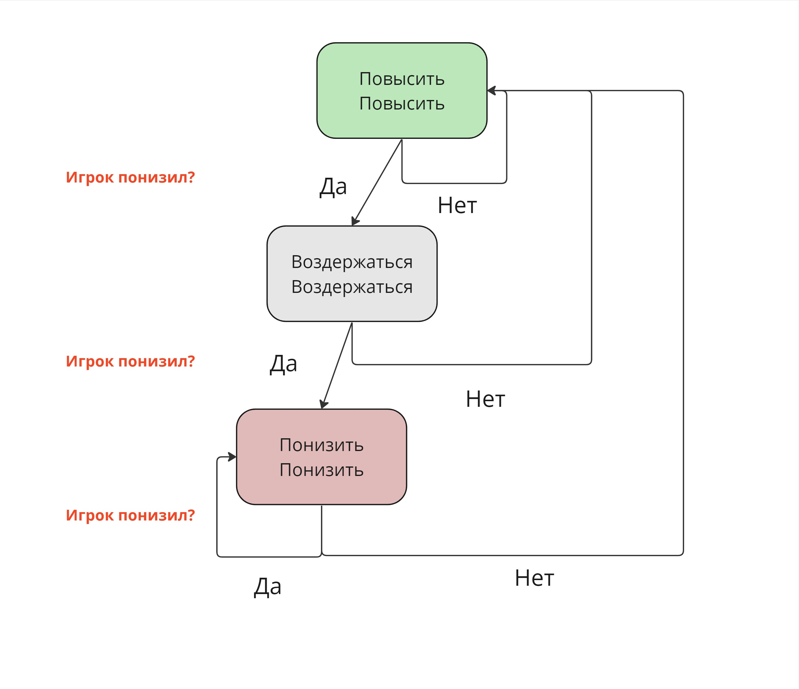

| Вы\Противник | ОБМАНУТЬ | ДОВЕРИТЬСЯ |
| ОБМАНУТЬ | +0 +0 | +3 -1 |
| ДОВЕРИТЬСЯ | -1 +3 | +2 +2 |
| truster | lier | copy | detective | alternation | random | vindictive | not_forgiving |
|
Противник, который всегда доверяет. |
Противник, который всегда обманывает. | Противник, который на первом ходе доверяет, а затем начинает копировать предыдущий ход пользователя. | Противник, который в первые три раунда доверяет пользователю, если пользователь его хоть раз обманывает, то противник начинает копировать его предыдущий ход, если же пользователь ни разу его не обманывает, то противник начинает всегда обманывать. | Противник, который чередует доверие с обманом, начиная с обмана. | Противник, который подбрасывает монетку и рандомно выбирает свой следующий ход. | Противник, который будет доверять пользователю до первого обмана, но после этого начинает всегда обманывать. | Противник, который начинает игру с обмана. если пользователь два раза подряд ему доверяет, то он начинает доверять пользователю если пользователь два раза подряд его обманывает, то он снова начинает обманывать. |
| Вы\Противник | ПОВЫСИТЬ | ВОЗДЕРЖАТЬСЯ | ПОНИЗИТЬ |
| ПОВЫСИТЬ | +4 +4 | -1 +3 | -2 +5 |
| ВОЗДЕРЖАТЬСЯ | +3 -1 | +0 +0 | -1 +1 |
| ПОНИЗИТЬ | +5 -2 | +1 -1 | -0.5 -0.5 |
| John | Sam | Lenny | Bob | Matthew | Molly |
| Противник, который всегда понижает цену, независимо от действий игрока. | Противник, который всегда воздерживается, независимо от действий игрока. | Противник, который всегда повыщает цену, независимо от действий игрока. | Противник, который повышает до первого понижения, после которого начинает всегда понижать. | Противник, который чередует понижение, воздерживание и повышение, начиная с понижения. | Противник, который сначала воздерживается, а затем копирует предыдущий ход игрока. |
| Brandon | Kate | Lesly | Jackson | Tomas | Emily |
| Противник, который подбрасывает монетку и рандомно выбирает свой ход. | Противник, который воздерживается, пока её счет больше или равен счету игрока, иначе понижает до того момента, пока её счет снова не будет больше или равен. | Противник, который первые 3 раунда воздерживается. Затем в последующих 3 раундах выбирает то, чего было больше в предыдущих 3 раундах. Если выбрать невозможно, то ход осуществляется рандомно. | Противник, который первые два раунда повышает, если игрок хоть раз понизил, то следующие два раунда воздерживается,
если игрок снова хоть раз понизил, то он следущие два раунда понижает. Если цикл сбивается, то всё начинается заново.

|
Противник, который чередует понижение, воздерживание и повышение каждые 2 раунда. |
Противник, который воздерживается, если счет равный, понижает, если количество прибыли у игрока больше и повышает, если количество пробыли у игрока меньше. |